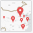
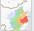
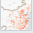
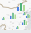
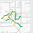
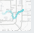

<div>
    <MyDialog :isShow="isShow">
        <div class="dialog">
            <h1>添加图表</h1>
            <h1>选择工作表</h1>
            <p>
                工作表名称：<span>{{table_name}}</span>
            </p>
            <tree ref='tree' :treeData="tableOption" :options="options" @node-click='handleNode' />
            <button @click="showDialog">确定</button>
        </div>
    </MyDialog>
    <div class="map" v-show="!isShow">
        <div class="map-left">
            <div class="map-left-table">
                <h1> 工作表 </h1>
                <p> {{table_name}}</p>
                <hr>
            </div>
            <div class="map-left-layer">
                <h1> 图层 </h1>
                <p>{{table_name}}</p>
                <hr>
            </div>
            <div class="map-left-field">
                <h1> 字段 </h1>
                <div v-for="field in fields">
                    <icon name="bookmark"></icon>{{field}}</div>
            </div>
        </div>
   
    <div class="map-content">
        <div class="map-content-condition">
            <div> <span>维度</span> </div>
            <hr>
            <div> <span>数值</span> </div>
            <hr>
        </div>
        <div class="map-content-down">
            <div class="map-content-sort">
                <div>
                    <h1>筛选器</h1>
                </div>
                <br>
                <br>
                <br>
                <br>
                <br>
                <br>
                <br>
                <br>
                <br>
                <br>
                <br>
                <br>
                <br>
                <br>
                <hr>
                <div>
                    <h1>颜色样式</h1>
                </div>
            </div>
            <div id="map"> </div>
        </div>
    </div>
    <div class="map-right">
        <div class="map-title">
            <h1>图表标题</h1>
            <input v-model='title' placeholder="图表标题">
            <hr> </div>
        <div class="map-type">
            <h1>图表类型</h1>
            <router-link to='/map/map1' tag='div' @click.native="map1Click" v-bind:class="{'map-type-selected':selected1}" class="div1"></router-link>
            <router-link v-bind:class="{'map-type-selected':selected2}" class="div2" to='/map/map2' tag='div' @click.native="map2Click"></router-link>
            <router-link v-bind:class="{'map-type-selected':selected3}" class="div3" to='/map/map3' tag='div' @click.native="map3Click"></router-link>
            <router-link v-bind:class="{'map-type-selected':selected4}" class="div4" to='/map/map4' tag='div'></router-link>
            <router-link v-bind:class="{'map-type-selected':selected5}" class="div5" to='/map/map5' tag='div'></router-link>
            <router-link v-bind:class="{'map-type-selected':selected6}" class="div6" to='/map/map6' tag='div'></router-link>
        </div>
        <div class="map-option">
            <hr>
            <h1>图表选项</h1>
            <router-view @icon-change="map1Click" @rad-change="map2Click"></router-view>
        </div>
    </div>
</div>
</div>
